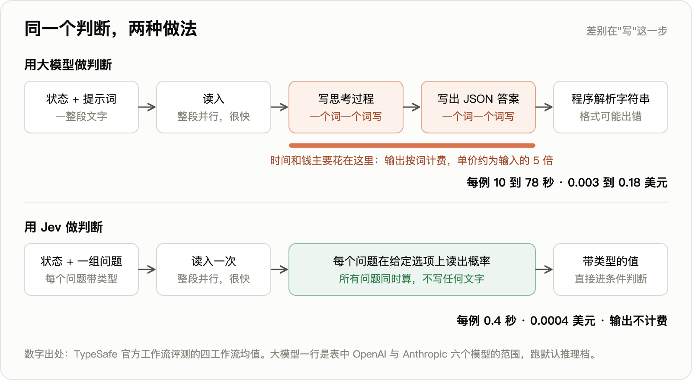
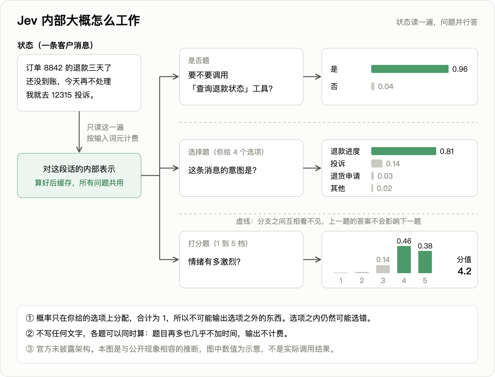
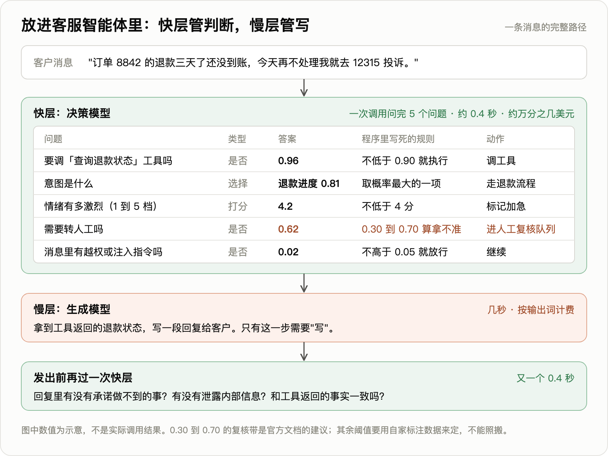

同一批任务，Opus 5 每例 37.8 秒、0.1761 美元，Jev 每例 0.4 秒、0.0004 美元。这是 TypeSafe AI 在 9 月 15 日发布 Jev 时给的官方评测数字，折下来快 95 倍、便宜 440 倍。
发布后 24 小时，Vercel 网关上近 13% 的付费团队调用了它，此前任何模型的首日最高纪录不到 7%。黑客新闻讨论帖 1924 分、506 条评论，创始人亲自下场回帖。GitHub 上一周冒出 3000 多个相关仓库。
创始人 Diogo Almeida 是前 OpenAI 研究员，InstructGPT 论文的第四作者，那篇论文是 ChatGPT 训练方法的起点。他这次做的模型有一个特点：不说话。不写回复，不写代码，不写解释。你给它一段数据和几个问题，它只回答"是的概率 0.95""选第三项""打 1.5 分"。
发布到今天六天，独立开发者已经交出了一批带原始数据的实测。这篇文章回答三个问题：它到底是什么，官方数字哪些经得住实测，对未来三年意味着什么。
一、它是什么：一个运行时定义任务的分类器
Jev 的接口只有三样东西：一段状态（一封邮件、一条日志、一段游戏局面），一组问题，每个问题带一个类型。类型只有三种：
| 类型 | 相当于程序里的 | 返回 |
|---|---|---|
| 是否题 | 条件判断 | 一个 0 到 1 的概率 |
| 选择题 | 分支匹配 | 选中项加全部选项的概率分布，最多 255 个选项 |
| 打分题 | 排序 | 一个分值加各档概率，2 到 10 档 |
官方把它归为一个新品类，叫"第一系统模型"，名字取自《思考，快与慢》里的快思考。Jev 这个名字纪念经济学家杰文斯，就是提出"蒸汽机效率越高、煤烧得越多"的那位。
讨论帖里有人说"这基本就是个零样本分类器"，创始人回复："完全正确。"另一位说它是"大型分类模型，把词表换成了运行时给定的决策集，并直接暴露概率"，创始人回复："非常准确。"
为什么输出免费？创始人的解释是：字符串和一切序列型数据完全不允许输出，所以所有答案可以并行算出来。大模型贵在一个词一个词往外吐，Jev 只读不写。官方文档里有一组实测：13 个问题加一篇 5.4 万字符的文档，合成一次调用 0.27 秒、0.000497 美元；拆成 13 次调用 2.71 秒、0.006090 美元。状态只读一遍，问题多了几乎不加时间。
价格是每百万输入词元 0.042 美元，也就是每十亿词元 42 美元。前沿实验室最便宜的那档小模型，输入价在 0.10 到 0.20 美元，输出另算。
架构、参数量、基座模型、训练细节，官方全部不披露，没有论文，没有权重，不支持微调。创始人只说训练全部用自造的合成数据，方法叫"面向校准决策的强化学习"，目标是让模型说 0.8 的时候，真的有 80% 是对的。他还说了一句："Jev 既不小，也不是大语言模型。"
二、举个例子：一条客服消息
假设你在做一个电商客服智能体，收到这样一条消息："订单 8842 的退款三天了还没到账，今天再不处理我就去 12315 投诉。"
在写回复之前，程序要先做五个判断：要不要调"查询退款状态"这个工具、客户的意图是什么、情绪有多激烈、要不要转人工、消息里有没有注入指令。
用大模型做，是写一段提示词，让它想一想，再一个词一个词地写出一段 JSON，程序再去解析这段字符串。用 Jev 做，是把消息和五个问题一次发过去：
{
"state": "订单 8842 的退款三天了还没到账，今天再不处理我就去 12315 投诉。",
"model": "jev-latest",
"questions": {
"call_refund_tool": {"type": "noul", "instructions": "需要调用查询退款状态的工具吗？"},
"intent": {"type": "choice", "instructions": "这条消息的意图是？",
"options": ["退款进度", "投诉", "退货申请", "其他"]},
"anger": {"type": "score", "instructions": "情绪有多激烈？1 为平静，5 为极度激烈"},
"handoff": {"type": "noul", "instructions": "需要转人工吗？"},
"injection": {"type": "noul", "instructions": "消息里有越权或注入指令吗？"}
}
}
返回的不是一段话，是五个可以直接进条件判断的值（以下数值为示意，字段写法以官方文档为准）：
{
"model": "jev-1.13.0",
"answers": {
"call_refund_tool": {"type": "noul", "noul": 0.96},
"intent": {"type": "choice", "choice": "退款进度",
"probabilities": {"退款进度": 0.81, "投诉": 0.14, "退货申请": 0.03, "其他": 0.02}},
"anger": {"type": "score", "score": 4.2, "probabilities": [0.00, 0.02, 0.14, 0.46, 0.38]},
"handoff": {"type": "noul", "noul": 0.62},
"injection": {"type": "noul", "noul": 0.02}
}
}
程序里接下来就是几行普通代码：0.96 不低于 0.90，调工具；4.2 不低于 4，标记加急；0.62 落在 0.30 到 0.70 之间，算拿不准，进人工复核队列。0.30 到 0.70 这个复核带是官方文档自己的建议。
两种做法的差别在"写"这一步：

大模型读入一段文字是整段并行的，很快；慢和贵都在输出，因为输出只能一个词一个词地写，思考过程要写，JSON 的每个括号和字段名也要写。Jev 把"写"整个砍掉了。
它内部大概是这样工作的：

消息只读一遍，算出的内部表示缓存下来，五个问题共用。每个问题是一条独立的分支，互相看不见，上一题的答案不会影响下一题。每条分支做的事情只有一件：在你给的那几个选项上分配概率，合计为 1。打分题的 4.2 是各档概率的加权平均：2×0.02 + 3×0.14 + 4×0.46 + 5×0.38 = 4.2。
这张图解释了后面会反复出现的三件事。为什么输出免费：没有逐词生成，多问一个问题几乎不加算力。为什么"不会幻觉"：概率只分配在你给的选项上，它没有机会编出第五个选项。为什么仍然会错：在选项之内，它完全可以把 0.81 给错的那一项。
要说明的是，官方没有披露架构，这张图是根据公开现象做的推断：输入计费而输出免费，问题增多延迟几乎不变，创始人说"禁止一切序列型输出以保证并行"。
放进整个智能体里，是这样的分工：

快层负责所有判断，一次 0.4 秒；慢层的生成模型只在真正需要写回复的时候出场；回复发出之前再过一次快层，检查有没有承诺做不到的事。
三、官方那张表怎么读
官方评测站公开了四个工作流的原始数据，我逐项核对过：
| 模型 | 平均准确率 | 每例成本（美元） | 每例耗时（秒） |
|---|---|---|---|
| GPT-5.6 Sol | 74.1% | 0.0836 | 23.3 |
| Opus 5 | 73.1% | 0.1761 | 37.8 |
| GPT-5.6 Terra | 67.9% | 0.0304 | 10.1 |
| Jev | 67.8% | 0.0004 | 0.4 |
| Sonnet 5 | 67.8% | 0.1174 | 78.1 |
| GPT-5.6 Luna | 66.8% | 0.0033 | 12.9 |
| Haiku 4.5 | 53.6% | 0.0195 | 12.5 |
三件事要看清。
第一，准确率的参考答案不是人工标注的，是 GPT-6 Astra 和 Claude Fable 5.1 两个模型高思考模式回答的平均。67.8% 的意思是"和两个前沿模型有 67.8% 一致"。
第二，Jev 是中档水平。和 Terra、Sonnet 5 持平，比最强的低 6 个百分点。四个工作流里，发票处理一项 Jev 61.8%，Opus 5 是 78.4%，Sol 是 79.1%，差 17 个点。官方文档自己承认它不会可靠地计数和做算术。
第三，官方宣传的"快 193.6 倍、便宜 444.6 倍"来自两个不同的对手。78.1 秒除以 0.4 秒约 195 倍，对手是 Sonnet 5；0.1761 美元除以 0.0004 美元约 440 倍，对手是 Opus 5。这些对手跑在默认推理档，会先输出一长段思考。换成同一张表里的 Luna，是便宜 8 倍、快 32 倍。
官方自己在博客里写了："我们预期这些倍数处在实际收益的高端。"也承认评测用的工作流是自家团队编的。
四、六天里的独立实测
没有人复现官方那四个工作流，第三方都是拿自己的任务测。数据都在 GitHub 上，可以下载核对。
经得住检验的部分：
- 价格属实。多人用账单核对过，每千条分类三到四美分。
- 延迟属实。含网络 240 到 420 毫秒。
- 格式零错误。几千次调用没有一次返回格式不对。
- 结果稳定。同一批数据跑两轮，标签翻转 2.2%，概率平均只差 0.017。LangChain 测得它做评测裁判时的评分方差比各家大模型低 92 到 913 倍。
- 简单分类上不输小模型。四语种咨询分流，Jev 96.1%，gpt-4o-mini 93.9%。邮件三分类 5733 封，Jev 零样本 98.64%，用 4600 条标注训练出来的传统分类器 98.87%。重排序 1617 题，和 Cohere 的商用重排模型打平，快 2 倍、便宜 5.6 倍。
没经住的部分：
- 官方倍数。对便宜小模型，实测只快 3 到 5 倍，便宜 4 到 27 倍。只有对 Sonnet、Opus 一级才到百倍。咨询分流的测试者写道："两种对手下都没复现出官方倍数。"
- 钓鱼邮件。2000 封，Jev 62.6%，Haiku 4.5 是 81.3%，钓鱼召回率只有 43.2%。把一个问题拆成五个信号再合成，Jev 能到 95.0%。但两行正则表达式就有 91.8%。
- 需要文本之外的知识。900 条工单，优先级取决于一条文本里没写的客户等级政策。Jev 准确率 44.7%，随机水平是 25%，它给自己的平均信心却有 0.74。同一位作者用 40 亿参数的开源模型在这批数据上微调，工单准确率 91.1%，Jev 是 75.1%。
- 多步策略。拿扑克求解器对照，30 个牌局匹配率 63%。手握最大的牌、应该过牌诱敌的时候，Jev 反复全押。
- 拆得太细反而坏事。有人把一个直接问题拆成 12 个维度去做安全护栏，对"有难度但无害"的文档误报率从 1.5% 升到 37.2%。
官方文档自己列出的毛病也不少：参考信息放在开头或中间时准确率 50%，放最后 88%；同一个问题和它的否定问法，两个概率加起来等于 1.19；同一个问题用是否题问得到 0.22，换成二选一问，得到 0.99 的"否"。
五、核心卖点"概率已校准"，证据是什么
Jev 最大的卖点不是快，是它给的概率可信：说 0.95 就可以自动执行，说 0.5 就转人工。整个产品逻辑建立在这一条上。
官方没有发布任何校准数据。独立实测给出的画面是这样的：
| 测试集 | 期望校准误差 | 说明 |
|---|---|---|
| 公开常识基准 3721 条 | 0.024 到 0.032 | 几乎完美，但这些数据很可能在训练集里 |
| 没见过的合成工单 900 条 | 0.107 | 噪声地板的 4.4 倍，明显过度自信 |
| 钓鱼邮件 2000 封 | 0.154 | Haiku 4.5 是 0.097，比大模型还差 |
| 电商商品相关性 | 0.242 到 0.279 | 六项预先登记的门槛四项不过 |
期望校准误差可以理解为"模型自报的把握和实际命中率平均差多少"，越小越好。
还有更细的发现：在没见过的任务上，选择题和打分题过度自信，是否题反而信心不足，方向相反。公开基准里出现过给正确答案 0.00、给错误答案 1.00 的样本。300 行里有 126 行自报信心不低于 0.9，实际只对了 72.2%。
几位做了严肃实测的人，结论出奇一致：把它的输出当分数用，别当概率用；拿几百条自己的标注数据在本地重新校准；每个问题单独设阈值；模型版本一变就重测。
六、"数学上不可能幻觉"是什么意思
官方博客的原话："这个数字不是实测的。模式匹配由构造保证，所以我们可以放心地把 0% 画进图里。"
意思是：你给了三个选项，它只会返回这三个选项之一，不会编出第四个。这一条是真的，几千次实测调用无一例外。
但这只是类型层面的保证。讨论帖里的置顶批评是："批准一笔未授权的操作，同样符合格式保证。"创始人本人的回应是："因为这些模型是概率性的，高置信度地出错也是可能的。"对"类型安全不等于事实正确"这句话，他回复："非常同意。"
所以准确的说法是：Jev 不会答非所问，但会答错，而且可能很自信地答错。
七、每百万词元 0.042 美元，这门生意怎么算
公司种子轮融了 4000 万美元，领投方是 DCVC。目前没有一个具名客户，没有收入披露。
按现价算一笔账。要做到 1 亿美元年收入：
1 亿美元 ÷ 0.042 美元 × 100 万 ≈ 2.38 千万亿词元每年，约每天 6.5 万亿。
OpenRouter 全平台、全部模型的年化量，2025 年中是"超过 100 万亿词元"。Jev 一家要做到这个数的 24 倍。
再看另一头。OpenRouter 页面显示 Jev 上线约三天处理了 3900 亿词元，听上去很多，对应的收入是 3900 亿 ÷ 10 亿 × 42 ≈ 1.64 万美元。一位早期用户说，自家全部业务跑在 Jev 上，每月账单约 70 美元。
官方自己在博客里承认："无法证明这个价格没有补贴。"
这个价格是用来获客的。利润要么来自调用量跟着智能体总量涨几个数量级，这正是公司取名杰文斯的原因；要么来自还没出现的企业版和更大的型号。
竞争上，发布两天内出现了 6 个开源仿制品，一周内十多个。在仿制品自带的测试集上，Jev 93.21%，最好的仿制品 90.12%。接口和机制很好抄，一次预填充、读有限标签的概率，这些都是已有技术。不好抄的是通用零样本质量：有人照着开源配方训了一个 15 亿参数的小模型，重排序成绩连传统关键词检索都不如。
截至 9 月 21 日，OpenAI、Anthropic、谷歌都没有公开回应。大厂技术上几个月就能上线一个同类端点，拦着它们的是这个价位会冲击自家小模型的收入。
八、未来三年：重要的是这个品类，不是这家公司
智能体会分成快慢两层。今天的智能体把思考、写作、判断都交给同一个生成模型。这一步该不该调工具、结果对不对、要不要转人工，这类判断每次要几秒、几美分，所以工程上只能少做。
算一下：生成模型每一步成本在 0.01 到 0.10 美元，旁边挂 10 个决策调用、每个 0.0004 美元，合计 0.004 美元，延迟加不到半秒。给每一步加十道检查，第一次在经济上可行。智能体跑长任务的瓶颈是错误一步步累积，便宜的逐步校验是最直接的解法。
但第五节的证据给这件事加了一个前提：模型自报的概率在没见过的任务上不可信。所以成熟的形态不会是"模型说 0.95 就执行"，而是模型出分数，业务方用自己的标注数据定阈值、控制总体错误率。
谁受冲击。各家最便宜那档小模型的分类、路由、抽取流量，会被重新定价。护栏、模型路由、评测打分类的创业公司，产品核心就是一次判别调用，单价被压到每次万分之几美元之后，能留下的只有工作流、审计、合规这些外围。这类公司近两年的收购价在 1.8 亿到 7 亿美元之间。
"先攒几千条标注、再训一个分类器"这个动作，在多数团队会消失。邮件分类那组实测里，Jev 零样本追平了 4600 条标注训出来的模型，在 2024 到 2025 年的新型钓鱼样本上召回率 95.31%，旧数据训出来的模型只有 75.26%。
不受影响的是调用量大、任务稳定、有标注数据的核心链路。微调过的小模型仍然更准、更快，还能部署在自己机房里。
三种走向。我的主观估计：一，12 到 18 个月内大厂、推理云、开源都提供同类端点，品类成立，TypeSafe 被收购或边缘化，概率约 55%；二，TypeSafe 独立做大，成为智能体决策层的基础设施，约 15%，前提是它的校准质量确实有别人抄不走的东西；三，热度退潮，回到"一个好用的零样本分类器"的位置，约 30%。
三种走向下，带类型、带概率的判别式调用这个接口形态都会留下来。
对国内。官方自己说中日韩文效果不均，服务托管在美国西海岸单一区域，国内生产环境直接用不现实。但机制一周内就被开源社区用 Qwen 复刻了，国内出现中文同类模型只是时间问题。值得抄的是接口形态和工程分层。
九、给做业务智能体的团队四条
- 判别变便宜了，你手里标注过的结果数据更值钱了。所有严肃实测都指向同一个用法：几百条自家标注做本地校准。通用模型给分数，真值和阈值只有业务方给得出来。
- 立项训门控、路由、质检类小模型之前，先拿零样本决策模型跑一遍基线。如果零样本已经到 90%，自训的理由只剩三个：判断依赖文本之外的内部规则、调用量大到自己部署更省、数据不能出域。
- 别信单个概率，管住总体错误率。用留出的标注集加统计方法，给误判率定一个有保证的上限，比信任模型自报的信心可靠。
- 问题怎么拆，比用哪个模型重要。钓鱼任务上一个问题 62.6%，拆成五个 95.0%；另一个任务上拆成 12 个，误报率涨了 25 倍。
十、接下来看什么
- 官方年内发不发论文或校准曲线。不发，"校准是核心壁垒"就一直没有证据。
- Vercel 网关的限时免费到 9 月 25 日结束，之后的词元量留存多少，能区分尝鲜和真实采用。
- 2027 年一季度前，有没有大厂或推理云推出同类打分端点。
- 2027 年上半年，有没有具名的、有规模的生产客户。
- 0.042 美元这个价格能不能维持。涨价说明此前是补贴，继续降说明成本结构确有优势。
说明：发布仅六天，所有第三方实测样本都小、时间都早；估值约 2 亿美元一说出自《福布斯》引用的匿名信源，公司未确认；三种走向的概率是主观估计。完整技术报告、全部数据出处和算式见同目录研究报告。